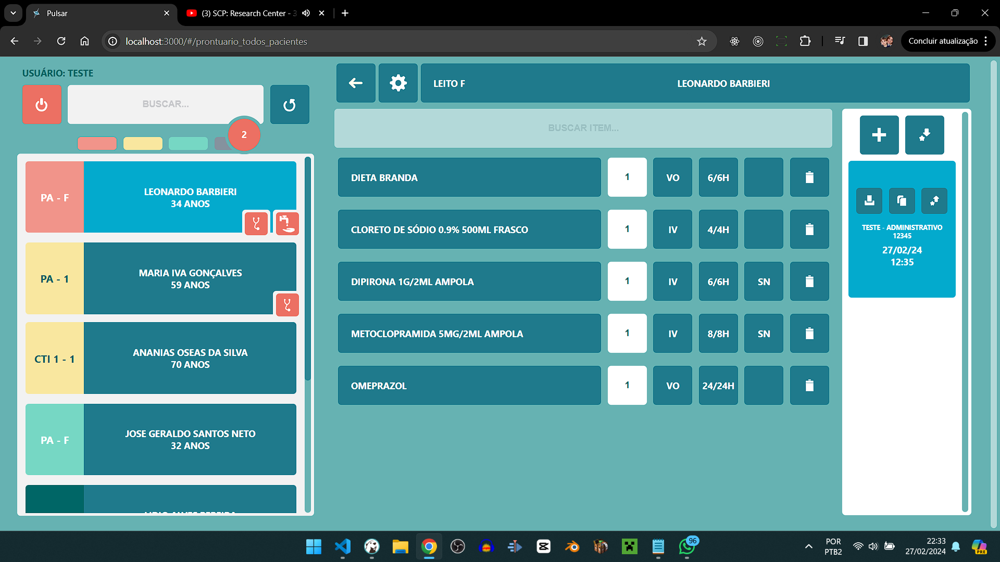
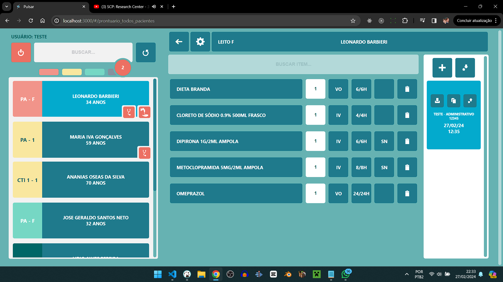
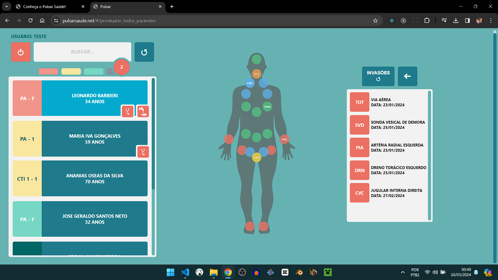
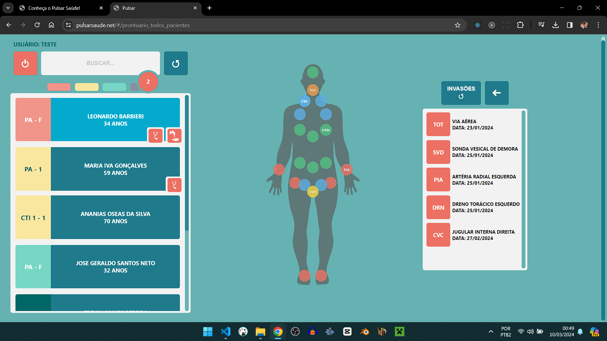
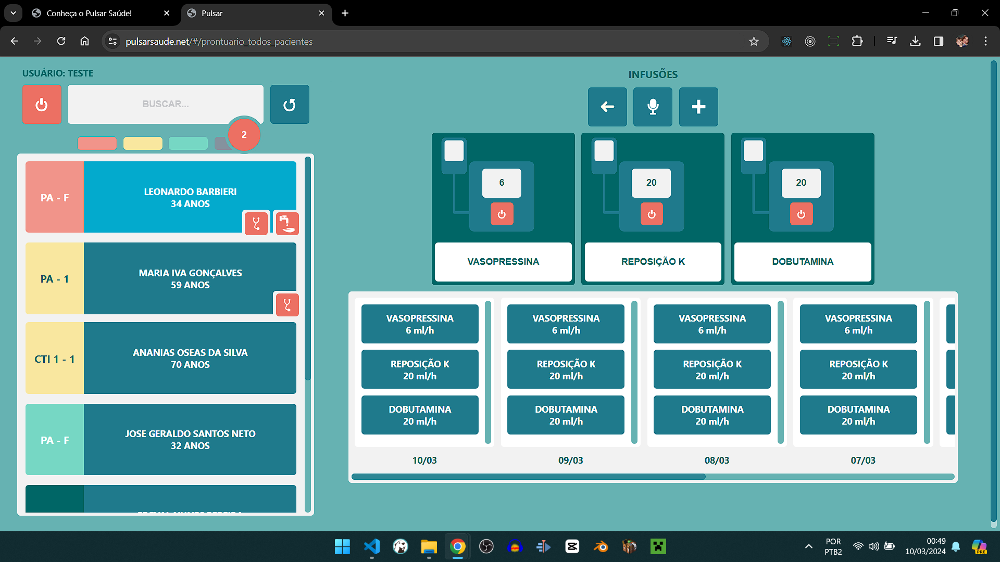
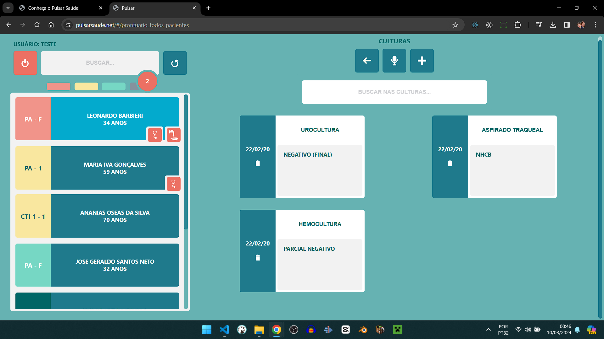
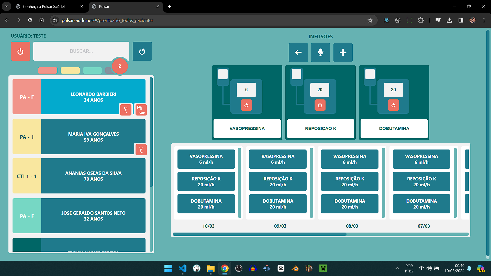
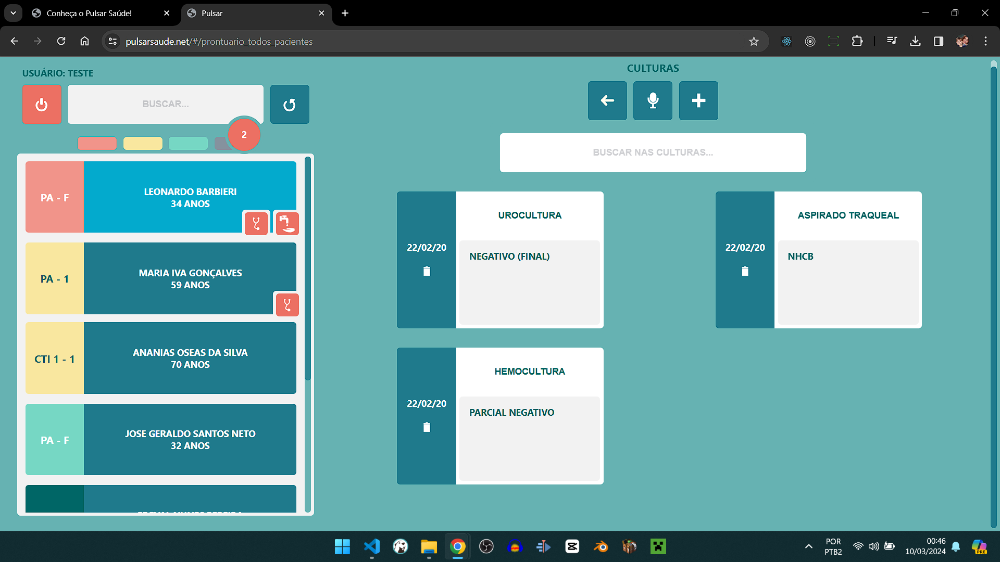

UM PRONTUÁRIO ELETRÔNICO PRÁTICO E RÁPIDO.
PULSAR SAÚDE - Uma solução inovadora para prontuário eletrônico. Ideal para UPAs, postos de saúde, hospitais, policlínicas ou consultórios.

INTRODUÇÃO
Os prontuários eletrônicos atuais no mercado estão em sua maioria defasados. São caros, lentos, com interface pouco amigável e nada intuitiva. Pulsar é a solução criada com a mais atual tecnologia Web e Mobile, destinada a tornar menos sofrido o seu dia-a-dia no hospital e no atendimento de seus clientes.
A um custo surpreendentemente baixo, é possível substituir papéis e tabelas improvisadas por uma ferramenta moderna, rápida, de belo design e que garante a persistência e a segurança das informações registradas.
E o melhor de tudo: você não precisa montar infraestrutura de rede ou servidor. Tudo fica disponível na nuvem. Basta ter computadores conectados à internet e impressoras.
MÓDULOS DISPONÍVEIS NO PACOTE BÁSICO
GESTÃO DE PACIENTES
Em poucos cliques, é possível movimentrar pacientes internados no hospital entre os diversos setores assistenciais.
DOCUMENTOS ELETRÔNICOS
Crie evoluções multidisciplinares, relatórios, sumários de alta, receitas, atestados e quaiquer outros documentos necessários, sendo possível gravar e utilizar modelos personalizados dos seus principais documentos, dinamizando sua rotina de trabalho. E mais: dados inputados no sistema, como sinais vitais, exames complementares, resultados de exames laboratoriais, podem ser automaticamente herdados às suas evoluções (chega de copiar e colar, tudo já estará na mão).
PRESCRIÇÃO
Inspirados no melhor modelo de prescrição existente no mercado, criamos um módulo de prescrição rápido e extremamente prático. Nele também é possível copiar os itens de prescrição e seus componentes, bem como criar modelos pessoais de prescrição.
LABORATÓRIO E IMAGEM
Solicite exames laboratoriais e de imagem fazendo uso de packs/combos que aceleram todo o processo. A depender da disponibilidade do cliente, o sistema Pulsar pode ser integrado ao equipamentos de laboratório (exigindo desenvolvimento à parte).
FARMÁCIA
O módulo da farmácia já é integrado à prescrição, permitindo à equipe a separação ordenada das medicações a serem dispensadas.
CONSULTAS AMBULATORIAIS
A aplicação Pulsar permite o fácil agendamento de consultas para cada profissional e especialidade médica cadastrada. O profissional especialista pode ver de casa sua agenda de consultas e acessar facilmente no prontuário os pacientes para atendimento.
MÓDULO DE TRIAGEM PARA PRONTO-ATENDIMENTO E SISTEMA DE CHAMADA EM TELA
Se seu hospital conta com pronto-atendimento, Pulsar tem o módulo de triagem com modelo de classificação de risco embutido. As chamadas para triagem e para atendimento nos consultórios é feita em tela de chamadas, com alerta sonoro e voz informando o nome do paciente.
CORRIDA DE LEITO
Utilizando a versão mobile da aplicação, para celular e tablet, é possível fazer a corrida beira leito no CTI e demais unidades de informação. As informações inputadas ficarão disponíveis para uso no preenchimento dos documentos eletrônicos, e alertas também são gerados a partir das mesmas (sepse, uso prolongado de dispositivos invasivos, tempo de antibioticoterapia, riscos, medidas de precaução), auxiliando na segurança da assistência ao paciente! Veja abaixo o que pode ser gerido na corrida de leitos:
- Dados completos de anamnese.
- Evolução.
- Alergias.
- Precauções.
- Controles clínicos (dados vitais, balanço hídrico acumulado).
- Parâmetros ventilatórios.
- Invasões (cateteres) e tempo de implantação das mesmas.
- Drogas em infusão contínua.
- Resultados de exames (sangue, imagem).
- Antibioticoterapia.
- Culturas.
- Propostas / planejamento terapêutico.
- Pedidos de interconsultas.
ALGUMAS TELAS


 



 

 




CONVERSE COM NOSSO TIME!
Mande um e-mail e vamos implantar o melhor prontuário eletrônico do planeta em seu serviço.
WhatsApp: (31) 99226-6268.
E-mail: contato@pulsarsaude.net.